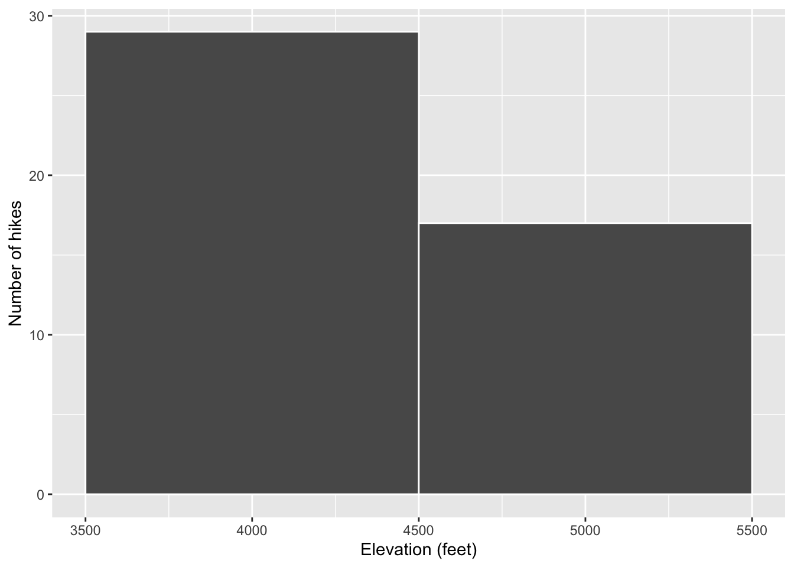

10 Univariate Viz
Use this file for practice with the univariate viz in-class activity. Refer to the class website for details.
10.1 Exercises
10.1.1 Exercise 1: Research Questions
Let’s dig into the hikes data, starting with the elevation and difficulty ratings of the hikes:
peak elevation difficulty ascent length time rating
1 Mt. Marcy 5344 5 3166 14.8 10.0 moderate
2 Algonquin Peak 5114 5 2936 9.6 9.0 moderate
3 Mt. Haystack 4960 7 3570 17.8 12.0 difficult
4 Mt. Skylight 4926 7 4265 17.9 15.0 difficult
5 Whiteface Mtn. 4867 4 2535 10.4 8.5 easy
6 Dix Mtn. 4857 5 2800 13.2 10.0 moderate- What features would we like a visualization of the categorical difficulty
ratingvariable to capture? We would like to create a layer that demonstrates the changes in scale between each peak. - What about a visualization of the quantitative
elevationvariable? We would like to create a layer that shows how the elevation changes at each peak (relationship between data points). ### Exercise 2: Load tidyverse {.unnumbered}
In order to use ggplot tools, we have to first load the tidyverse package in which they live. We’ve installed the package but we need to tell R when we want to use it. Run the chunk below to load the library. You’ll need to do this within any .qmd file that uses ggplot().
Warning: package 'ggplot2' was built under R version 4.3.2── Attaching core tidyverse packages ──────────────────────── tidyverse 2.0.0 ──
✔ dplyr 1.1.3 ✔ readr 2.1.4
✔ forcats 1.0.0 ✔ stringr 1.5.0
✔ ggplot2 3.5.1 ✔ tibble 3.2.1
✔ lubridate 1.9.3 ✔ tidyr 1.3.0
✔ purrr 1.0.2
── Conflicts ────────────────────────────────────────── tidyverse_conflicts() ──
✖ dplyr::filter() masks stats::filter()
✖ dplyr::lag() masks stats::lag()
ℹ Use the conflicted package (<http://conflicted.r-lib.org/>) to force all conflicts to become errorsExercise 3: Bar Chart of Ratings - Part 1
Consider some specific research questions about the difficulty rating of the hikes:
- How many hikes fall into each category?
- Are the hikes evenly distributed among these categories, or are some more common than others?
All of these questions can be answered with: (1) a bar chart; of (2) the categorical data recorded in the rating column. First, set up the plotting frame:

Think about:
- What did this do? What do you observe? Blank axis with the three different ratings.
- What, in general, is the first argument of the
ggplot()function? To look in the data file titled hikes. - What is the purpose of writing
x = rating? Tells R to make the x-axis out of the different possible data points in rating. - What do you think
aesstands for?!? Aesthetics
10.1.2 Exercise 4: Bar Chart of Ratings - Part 2
Now let’s add a geometric layer to the frame / canvas, and start customizing the plot’s theme. To this end, try each chunk below, one by one. In each chunk, make a comment about how both the code and the corresponding plot both changed.
NOTE:
- Pay attention to the general code properties and structure, not memorization.
- Not all of these are “good” plots. We’re just exploring
ggplot.
# COMMENT on the change in the code and the corresponding change in the plot
ggplot(hikes, aes(x = rating)) +
geom_bar()
# COMMENT on the change in the code and the corresponding change in the plot
ggplot(hikes, aes(x = rating)) +
geom_bar() +
labs(x = "Rating", y = "Number of hikes")
# COMMENT on the change in the code and the corresponding change in the plot
ggplot(hikes, aes(x = rating)) +
geom_bar(fill = "blue") +
labs(x = "Rating", y = "Number of hikes")

Exercise 5: Bar Chart Follow-up
Part a
Reflect on the ggplot() code.
- What’s the purpose of the
+? When do we use it? Adding a component to the plot. - We added the bars using
geom_bar()? Why “geom”? Geometric layer to the frame/canvas - What does
labs()stand for? labels - What’s the difference between
colorandfill? Color is border color and fill is the color within the individual bars.
Part b
In general, bar charts allow us to examine the following properties of a categorical variable:
- observed categories: What categories did we observe?
Rating (easy, moderate, difficult)
- variability between categories: Are observations evenly spread out among the categories, or are some categories more common than others?
Some categories are more common than others.
We must then translate this information into the context of our analysis, here hikes in the Adirondacks. Summarize below what you learned from the bar chart, in context.
The bar chart shows us that moderate hikes were the most common type of hike, with difficult hikes being the least common. There are roughly 45 total hikes.
Part c
Is there anything you don’t like about this barplot? For example: check out the x-axis again.
I wish that the x-axis was in the order of easy to moderate to difficult (I don’t need them to be in order of ascending frequency). I also would like a few more numbers on the y-axis.
Exercise 6: Sad Bar Chart
Let’s now consider some research questions related to the quantitative elevation variable:
- Among the hikes, what’s the range of elevation and how are the hikes distributed within this range (e.g. evenly, in clumps, “normally”)?
- What’s a typical elevation?
- Are there any outliers, i.e. hikes that have unusually high or low elevations?
Here:
- Construct a bar chart of the quantitative
elevationvariable. - Explain why this might not be an effective visualization for this and other quantitative variables. (What questions does / doesn’t it help answer?)
This bar chart is an effective visualization to see whether there are peaks with the same elevation, but it does not show individual peaks, nor does it emphasize individual data points–the line is distracting… could have done better with a point. Hard to see where they clump. There is not an average line to compare the data with, which would demonstrate typical elevation.
Exercise 7: A Histogram of Elevation
Quantitative variables require different viz than categorical variables. Especially when there are many possible outcomes of the quantitative variable. It’s typically insufficient to simply count up the number of times we’ve observed a particular outcome as the bar graph did above. It gives us a sense of ranges and typical outcomes, but not a good sense of how the observations are distributed across this range. We’ll explore two methods for graphing quantitative variables: histograms and density plots.
Histograms are constructed by (1) dividing up the observed range of the variable into ‘bins’ of equal width; and (2) counting up the number of cases that fall into each bin. Check out the example below:

Part a
Let’s dig into some details.
- How many hikes have an elevation between 4500 and 4700 feet? ~6 hikes
- How many total hikes have an elevation of at least 5100 feet? ~2
Part b
Now the bigger picture. In general, histograms allow us to examine the following properties of a quantitative variable:
- typical outcome: Where’s the center of the data points? What’s typical?
- variability & range: How spread out are the outcomes? What are the max and min outcomes?
- shape: How are values distributed along the observed range? Is the distribution symmetric, right-skewed, left-skewed, bi-modal, or uniform (flat)?
- outliers: Are there any outliers, i.e. outcomes that are unusually large/small?
We must then translate this information into the context of our analysis, here hikes in the Adirondacks. Addressing each of the features in the above list, summarize below what you learned from the histogram, in context.
The typical elevation of the hikes in the Adirondacks is roughly 4300 but the most common elevation is 4000 ft. The minimum outcome is ~3750 ft and the maximum elevation is 5500 ft.The graph seems to be skewed right. Outliers may exist in hikes above 5100 ft.
Exercise 8: Building Histograms - Part 1
2-MINUTE CHALLENGE: Thinking of the bar chart code, try to intuit what line you can tack on to the below frame of elevation to add a histogram layer. Don’t forget a +. If it doesn’t come to you within 2 minutes, no problem – all will be revealed in the next exercise.
Exercise 9: Building Histograms - Part 2
Let’s build some histograms. Try each chunk below, one by one. In each chunk, make a comment about how both the code and the corresponding plot both changed.
# COMMENT on the change in the code and the corresponding change in the plot
ggplot(hikes, aes(x = elevation)) +
geom_histogram()`stat_bin()` using `bins = 30`. Pick better value with `binwidth`.
# COMMENT on the change in the code and the corresponding change in the plot
ggplot(hikes, aes(x = elevation)) +
geom_histogram(color = "white") `stat_bin()` using `bins = 30`. Pick better value with `binwidth`.
# COMMENT on the change in the code and the corresponding change in the plot
ggplot(hikes, aes(x = elevation)) +
geom_histogram(color = "white", fill = "blue") `stat_bin()` using `bins = 30`. Pick better value with `binwidth`.
# COMMENT on the change in the code and the corresponding change in the plot
ggplot(hikes, aes(x = elevation)) +
geom_histogram(color = "white") +
labs(x = "Elevation (feet)", y = "Number of hikes")`stat_bin()` using `bins = 30`. Pick better value with `binwidth`.
# COMMENT on the change in the code and the corresponding change in the plot
ggplot(hikes, aes(x = elevation)) +
geom_histogram(color = "white", binwidth = 1000) +
labs(x = "Elevation (feet)", y = "Number of hikes")

Exercise 10: Histogram Follow-up
- What function added the histogram layer / geometry?
geom_histogram
- What’s the difference between
colorandfill?
color is thr outline, and fill is the color within the bars
- Why does adding
color = "white"improve the visualization?
Because we are able to distinguish between the different bars (otherwise it becomes a blob)
- What did
binwidthdo?
Binwidth changes the size of the bars (the range of elevation that we are counting the hikes in)
- Why does the histogram become ineffective if the
binwidthis too big (e.g. 1000 feet)?
Encapsulates too much of the data set (no patterns can be seen)
- Why does the histogram become ineffective if the
binwidthis too small (e.g. 5 feet)?
It becomes a bar chart again! We cannot see any significant patterns because the bars are too skinny and the array is too limited.
Exercise 11: Density Plots
Density plots are essentially smooth versions of the histogram. Instead of sorting observations into discrete bins, the “density” of observations is calculated across the entire range of outcomes. The greater the number of observations, the greater the density! The density is then scaled so that the area under the density curve always equals 1 and the area under any fraction of the curve represents the fraction of cases that lie in that range.
Check out a density plot of elevation. Notice that the y-axis (density) has no contextual interpretation – it’s a relative measure. The higher the density, the more common are elevations in that range.
Questions
-
INTUITION CHECK: Before tweaking the code and thinking back to
geom_bar()andgeom_histogram(), how do you anticipate the following code will change the plot?geom_density(color = "blue")geom_density(fill = "orange")
TRY IT! Test out those lines in the chunk below. Was your intuition correct?
- Examine the density plot. How does it compare to the histogram? What does it tell you about the typical elevation, variability / range in elevations, and shape of the distribution of elevations within this range?
We get a more complete breakdown of the density of elevations. I.e. how many hikes at each elevation. More clearly shows the skew of the plot and potential outliers.
Exercise 12: Density Plots vs Histograms
The histogram and density plot both allow us to visualize the behavior of a quantitative variable: typical outcome, variability / range, shape, and outliers. What are the pros/cons of each? What do you like/not like about each?
I like the smooth look of the density plot… it lets us see the skew more clearly, but I think that it could be more clear to talk about frequency of hikes.
Exercise 13: Code = communication
We obviously won’t be done until we talk about communication. All code above has a similar general structure (where the details can change):
- Though not necessary to the code working, it’s common, good practice to indent or tab the lines of code after the first line (counterexample below). Why?
# YUCK
ggplot(hikes, aes(x = elevation)) +
geom_histogram(color = "white", binwidth = 200) +
labs(x = "Elevation (feet)", y = "Number of hikes")
- Though not necessary to the code working, it’s common, good practice to put a line break after each
+(counterexample below). Why?

Exercise 14: Practice
Part a
Practice your viz skills to learn about some of the variables in one of the following datasets from the previous class:
Part b
Check out the RStudio Data Visualization cheat sheet to learn more features of ggplot.
When done, don’t forgot to click Render Book and check the resulting HTML files. If happy, jump to GitHub Desktop and commit the changes with the message Finish activity 3 and push to GitHub. Wait few seconds, then visit your portfolio website and make sure the changes are there.